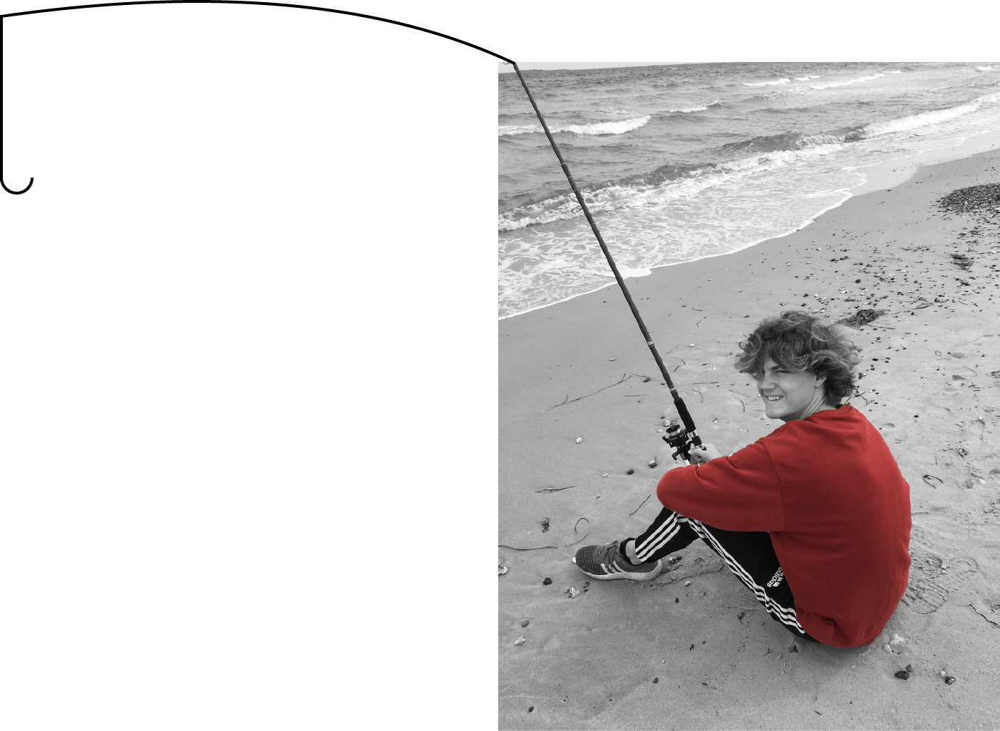

Om mig

Mit navn er Benjamin,
jeg er 19 år gammel,
bor på Frederiksberg
og studerermultimediedesign på KEA.
Grunden til at jeg har valgt at studere
multimediedesign, er min store passion
og interesse for IT og design.
Jeg har altid været en fan af de 2 ting
hver for sig, og jeg nyder at kompinere
de to aspekter til hverdag og skabe
kreative løsninger, som ikke kun
øger mine færdigheder og
interesser, men samtidig
er løsninger som kan blive brugt på et
proffesionelt plan. Jeg har lavet et
hjemmeside for en kunde som virkelig
har givet mig et stort indblik i hvor
meget arbejde som der ligger i at
lave siden, men også
at få den op at køre.
